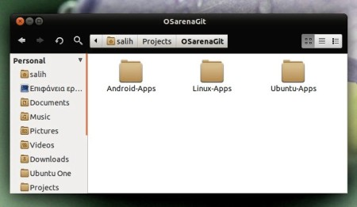

Κεντρικό Αποθετήριο Εφαρμογών του osarena.net
(Σελίς υπο κατασκευήν: version Alpha 2 )
To OSarena.net Apps αποτελεί το κεντρικό αποθετήριο λογισμικού απο το οποίο μπορείτε να κατεβάσετε ελεύθερα ανοιχτού κώδικα προγράμματα για τις Linux συσκευές σας.
Όσοι διαθέτετε κάποιο smartphone (Android Linux, iPhone, Nokia, Blackbery κλπ) θα είστε εξοικειωμένοι με τις έννοιες Market, App Center, OVI κλπ.
Οι έννοιες αυτές υπάρχουν πάνω από 10 χρόνια στο κόσμο του Linux και δεν είναι καινούριες.
Η εγκατάσταση των προγραμμάτων στο Linux δεν γίνεται όπως σε άλλα λειτουργικά πηγαίνοντας σε διάφορα site και κατεβάζοντας λογισμικά,
(διαβάστε εδώ για την επικινδυνότητα του θέματος )
αλλά από ένα κεντρικό παράθυρο τύπου Προσθαφαίρεσης Προγραμμάτων.
Υπάρχουν κυριολεκτικά χιλιάδες προγράμματα διαθέσιμα για να καλύψει τις ανάγκες των χρηστών του Linux.
Αυτά τα προγράμματα είναι αποθηκευμένα σε πηγές που συνήθως αναφέρονται ως αποθήκες ή αποθετήρια.
Τα αποθετήρια καθιστούν πολύ εύκολη την εγκατάσταση νέου λογισμικού στον υπολογιστή σας μέσο της σύνδεσης σας στο Internet,
παρέχοντας ταυτόχρονα υψηλό επίπεδο ασφάλειας και τέλος την σιγουριά ότι είναι καλά δοκιμασμένο και ειδικά κατασκευασμένο
για την έκδοση του λειτουργικού σας. Εκτός αυτού, με αυτό τον τρόπο όλο το λειτουργικό μαζί με τα προγράμματα σας λαμβάνουν ενημερώσεις
και διορθώσεις λογισμικού και έτσι δεν χρειάζεται να ψάχνετε για νέες εκδόσεις σε διαφορετικές ιστοσελίδες.
Έτσι λοιπόν αποφασίσαμε να δημιουργήσουμε ένα κεντρικό αποθετήριο λογισμικών/εργαλείων για το Osarena.net . Σκεφτήκαμε ότι τα πλεονεκτήματα είναι αρκετά για να τα αγνοήσουμε μα πάνω από όλα κυρίως βολεύουν εμάς και τους αναγνώστες.
Με αυτό τον τρόπο, μπορούμε να μοιραστούμε τα λογισμικά/εργαλεία/δεδομένα με τους αναγνώστες μας και να τα διατηρούμε ενημερωμένα στις τελευταίες τους εκδόσεις
Οι αναγνώστες το μόνο που χρειάζεται να κάνουν είναι να επιλέξουν το αγαπημένο τους αποθετήριο, να κατεβάσουν τον εγκατάσταση και έπειτα να μπουν στον φάκελο
OSarenaRepo απο τον αρχικό τους κατάλογο και να δουν τα προγράμματα/εργαλεία/δεδομενα που έχουν κατέβει.
Σε περίπτωση που έχει βγεί νέα έκδοση των προγραμμάτων, ή και έχουν προστεθεί νέα λογισμικά, τότε ο οι αναγνώστες που παρακολουθούν τα
νέα στο Osarena.net θα ενημερωθούν να τρέξουν το πρόγραμμα update-repo για να κατεβάσει
αυτόματα τα νέα προγράμματα από το αποθετήριο μας.
Έτσι λοιπόν αποφασίσαμε να δημιουργήσουμε ένα κεντρικό αποθετήριο λογισμικών/εργαλείων για το Osarena.net . Σκεφτήκαμε ότι τα πλεονεκτήματα είναι αρκετά για να τα αγνοήσουμε μα πάνω από όλα κυρίως βολεύουν εμάς και τους αναγνώστες.
- Είναι μαζεμένα όλα σε ένα μέρος
- Τα συντηρούμε εμείς
- Ότι μπαίνει εκεί... απλά δουλεύει :)
- Είναι όλα δωρεάν και ελεύθερα απο περιορισμούς
- Το αποθετήριο έχει κεντρική διαχείρηση στo https://github.com/osarena
- Το αποθετήριο είναι ανεξάρτητο διανομής και το git υπάρχει σε όλες της διανομές.
- Τα αποθετήρια μπορούν να περιλαμβάνουν εκτός από το εκτελέσιμο πρόγραμμα και τον κώδικά του.
- Επιτρέπει την δημιουργία κατηγοριοποιημένων αποθηκών λογισμικού ανάλογα με τον σκοπό των λογισμικών. (πχ Android, Ubuntu, Linux, κλπ. κλπ....)
- Επιτρέπει την δημιουργία ομάδων που ασχολούνται/συντηρούν/ανεβάζουν λογισμικά που ενδιαφέρουν μόνο συγκεκριμένες κατηγορίες.
Συμβουλές για το Αποθετήριο
Όταν εκτελέσετε τον εγκαταστάτη της αποθήκης που επιλέξατε, θα έχετε έναν φάκελο OSarenaRepo στον αρχικό σας κατάλογο- Εκεί μέσα θα έχετε τις αποθήκες που σας ενδιαφέρουν.
- Να μην πειράζετε ή να διαγράφετε δεδομένα από μέσα αλλά ότι σας ενδιαφέρει να το πειράξετε/τρέξετε καλύτερα να το αντιγράφετε σε άλλο φάκελο της προτίμησης σας.
- Ο φάκελος αυτός όταν θα εκτελείτε το update-repo θα διαγράφει ότι αλλαγές έχετε κάνει και θα εγκαθιστά τις τελευταίες εκδόσεις των περιεχομένων από τις αποθήκες.
- Γενικά κρατήστε τον απείραχτο ώστε να είναι ο "εικονικός σύνδεσμος" σας με την αποθήκη του OSarena.
- Όταν εμείς θα ανεβάζουμε ένα νέο λογισμικό το μονό που θα εκτελείτε είναι το πρόγραμμα update-repo και έτσι εκτός από αναβαθμίσεις, θα κατέβουν και νέα προγράμματα στους αντίστοιχους φακέλους.
Μπορώ να βοηθήσω σε κάτι;
Υπάρχουν πολύ τρόποι να μας βοηθήστε αλλά οι σημαντικότεροι είναι:- Να μας ενημερώνετε αν βρείτε κάτι που δεν δουλεύει όπως θα έπρεπε.
- Να μας ενημερώνετε αν κάποιο από τα προγράμματα μας δεν είναι πλήρως εξελληνισμένα
- Να μας ενημερώνετε για μικρά εργαλεία, προγράμματάκια που θα θέλετε να δείτε στο αποθετήριο μας.
- Αν έχετε να μας προτείνετε κάποια ιδέα που μας ξέφυγε επικοινωνήστε μαζί μας
- Παρακολουθείστε την ιστοσελίδα μας Osarenae.net για να μαθαίνετε πότε και ποια νέα λογισμικά έχουν μπει στο αποθετήριο μας